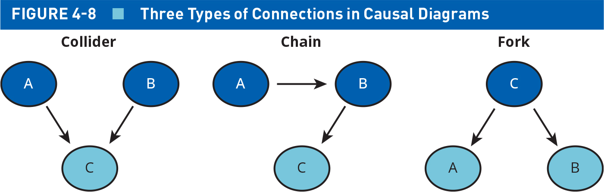
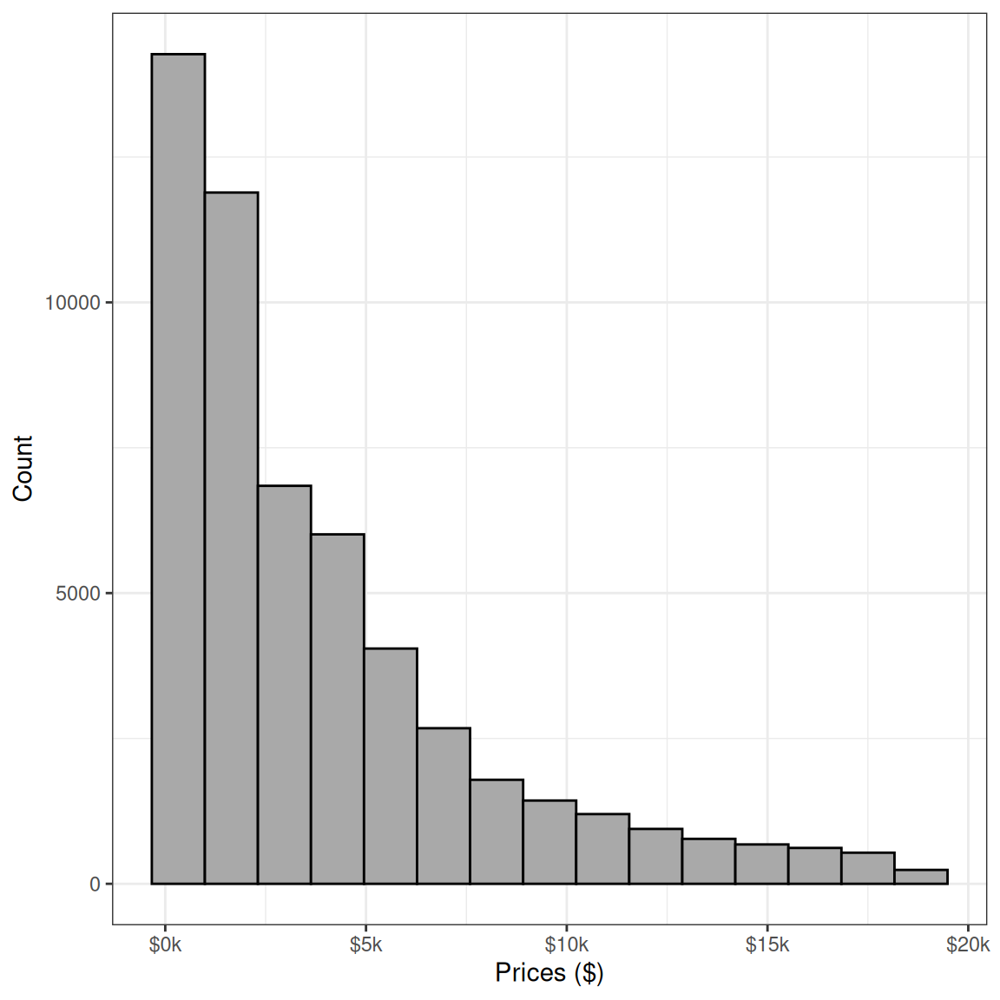
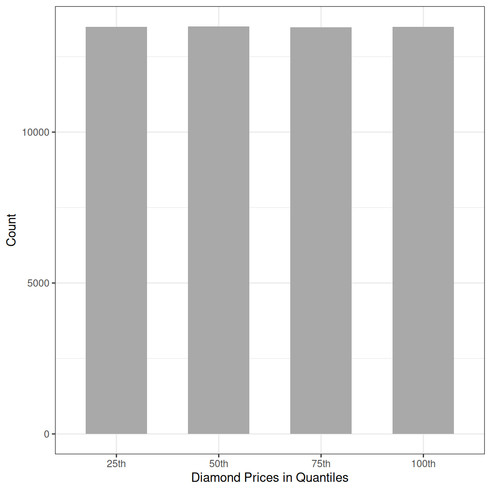
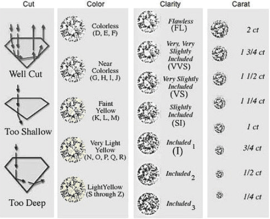
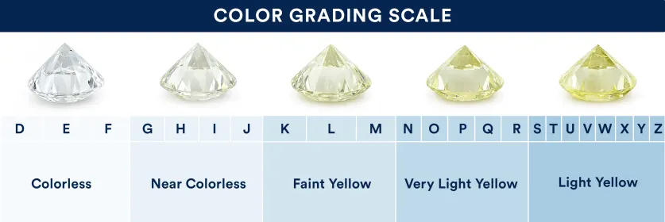
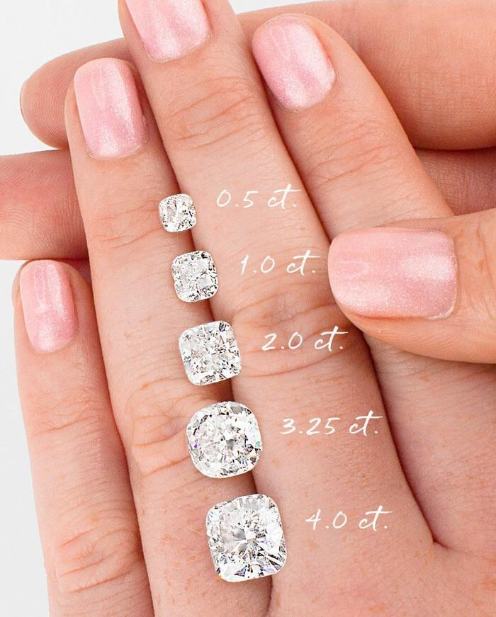

Introduction to Bivariate Analyses
Generating cross-tabs and group statistics
Create a new R file: Bivariate_Descriptive_Stats.R
Justin Leinaweaver (Spring 2026)
Univariate Analyses
Evaluating measures of the empirical world, AND
Using statistics to summarize or describe their distributions
Bivariate Analyses

Bivariate Analyses: Descriptive Statistics
Add the following to your notes:
# A tibble: 53,940 × 10
carat cut color clarity depth table price x y z
<dbl> <ord> <ord> <ord> <dbl> <dbl> <int> <dbl> <dbl> <dbl>
1 0.23 Ideal E SI2 61.5 55 326 3.95 3.98 2.43
2 0.21 Premium E SI1 59.8 61 326 3.89 3.84 2.31
3 0.23 Good E VS1 56.9 65 327 4.05 4.07 2.31
4 0.29 Premium I VS2 62.4 58 334 4.2 4.23 2.63
5 0.31 Good J SI2 63.3 58 335 4.34 4.35 2.75
6 0.24 Very Good J VVS2 62.8 57 336 3.94 3.96 2.48
7 0.24 Very Good I VVS1 62.3 57 336 3.95 3.98 2.47
8 0.26 Very Good H SI1 61.9 55 337 4.07 4.11 2.53
9 0.22 Fair E VS2 65.1 61 337 3.87 3.78 2.49
10 0.23 Very Good H VS1 59.4 61 338 4 4.05 2.39
# ℹ 53,930 more rows


Bivariate Analyses: Categorical x Categorical
Fair Good Very Good Premium Ideal
25th 88 1057 3129 2907 6309
50th 462 1087 2533 3069 6344
75th 667 1634 3369 3504 4296
100th 393 1128 3051 4311 4602
Fair Good Very Good Premium Ideal
25th 0.001631442 0.019595847 0.058008899 0.053893215 0.116963293
50th 0.008565072 0.020152021 0.046959585 0.056896552 0.117612162
75th 0.012365591 0.030292918 0.062458287 0.064961068 0.079644049
100th 0.007285873 0.020912125 0.056562848 0.079922136 0.085317019Bivariate Analyses: Categorical x Categorical
Fair Good Very Good Premium Ideal
25th 88 1057 3129 2907 6309
50th 462 1087 2533 3069 6344
75th 667 1634 3369 3504 4296
100th 393 1128 3051 4311 4602
Fair Good Very Good Premium Ideal
25th 0.05465839 0.21545047 0.25898030 0.21078965 0.29274744
50th 0.28695652 0.22156543 0.20965072 0.22253644 0.29437149
75th 0.41428571 0.33306156 0.27884456 0.25407875 0.19934110
100th 0.24409938 0.22992254 0.25252442 0.31259517 0.21353997
Bivariate Analyses: Categorical x Categorical
D E F G H I J
25th 1878 2790 2268 2917 2023 1184 430
50th 2047 2984 2642 2962 1448 888 524
75th 1698 2471 2520 2227 2308 1459 787
100th 1152 1552 2112 3186 2525 1891 1067
D E F G H I J
25th 0.2771956 0.2847811 0.2376860 0.2583245 0.2436175 0.2183696 0.1531339
50th 0.3021402 0.3045830 0.2768812 0.2623096 0.1743738 0.1637772 0.1866097
75th 0.2506273 0.2522201 0.2640956 0.1972193 0.2779383 0.2690889 0.2802707
100th 0.1700369 0.1584158 0.2213372 0.2821467 0.3040703 0.3487643 0.3799858Bivariate Analyses: Numeric x Categorical
aggregate(data, y ~ x, FUN)
“data” is the dataset
“y” is the interval outcome
“x” is a nominal or ordinal predictor
“FUN” is the descriptive statistic you want to calculate
Bivariate Analyses: Numeric x Categorical
Bivariate Analyses: Numeric x Categorical
cut price.Min. price.1st Qu. price.Median price.Mean price.3rd Qu. price.Max.
1 Fair 337.000 2050.250 3282.000 4358.758 5205.500 18574.000
2 Good 327.000 1145.000 3050.500 3928.864 5028.000 18788.000
3 Very Good 336.000 912.000 2648.000 3981.760 5372.750 18818.000
4 Premium 326.000 1046.000 3185.000 4584.258 6296.000 18823.000
5 Ideal 326.000 878.000 1810.000 3457.542 4678.500 18806.000 color price.Min. price.1st Qu. price.Median price.Mean price.3rd Qu. price.Max.
1 D 357.000 911.000 1838.000 3169.954 4213.500 18693.000
2 E 326.000 882.000 1739.000 3076.752 4003.000 18731.000
3 F 342.000 982.000 2343.500 3724.886 4868.250 18791.000
4 G 354.000 931.000 2242.000 3999.136 6048.000 18818.000
5 H 337.000 984.000 3460.000 4486.669 5980.250 18803.000
6 I 334.000 1120.500 3730.000 5091.875 7201.750 18823.000
7 J 335.000 1860.500 4234.000 5323.818 7695.000 18710.000
Convert carat into an ordinal variable (quartiles)
Check the effect on price using aggregate
Min. 1st Qu. Median Mean 3rd Qu. Max.
0.2000 0.4000 0.7000 0.7979 1.0400 5.0100 carat_cat price.Min. price.1st Qu. price.Median price.Mean price.3rd Qu. price.Max.
1 25th 326.0000 579.0000 718.0000 739.2862 877.0000 2366.0000
2 50th 452.0000 1169.0000 1626.0000 1667.2723 2016.0000 6607.0000
3 75th 945.0000 2936.0000 3888.0000 4189.1890 4899.0000 18542.0000
4 100th 2066.0000 5818.5000 8449.0000 9273.6730 12152.0000 18823.0000Analyze our Additive Index of Americans’ Political Engagement (ANES)
Required Steps
Choose a predictor
Propose a theory
Test your hypothesis
Explain your findings!
Predictor Options